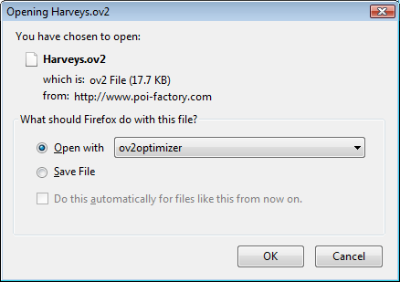

I use ov2optimizer to update my POI files as I download them. When Firefox prompts me to "Save" or "Open" the OV2 or CSV file, I choose to open it with ov2optimizer.exe.
When the optimization is complete I am prompted with a "Save" dialog (just as if I had chosen "Save" in Firefox). ov2optimizer remembers the last-used save folder so it defaults to the map directory on my TomTom.
Of course, you can always just
Most of the OV2 files that ship with TomTom devices (i.e., the built-in POIs) are encrypted. If you try to run any of them through ov2optimizer you will get an error message.